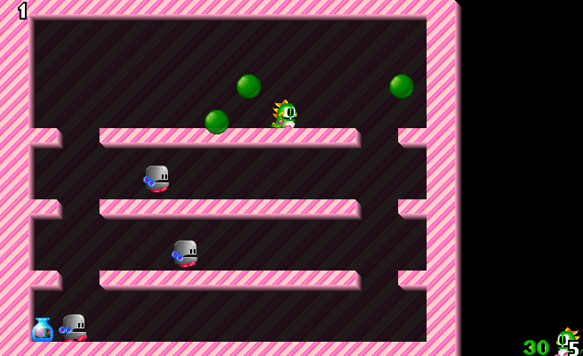
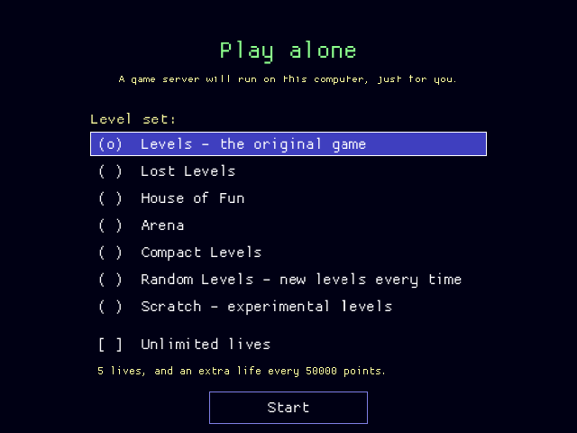
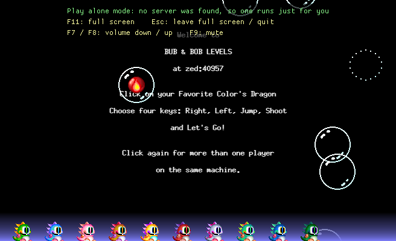
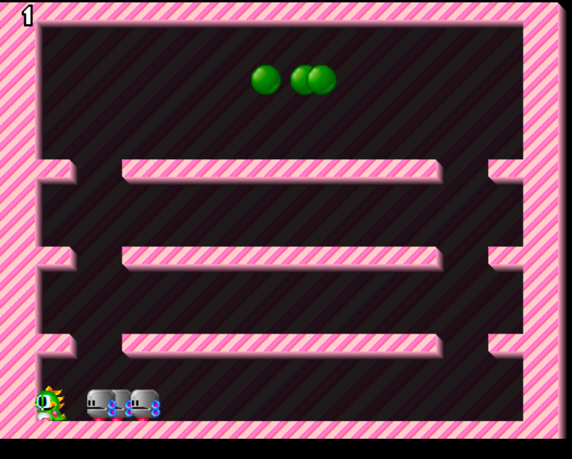
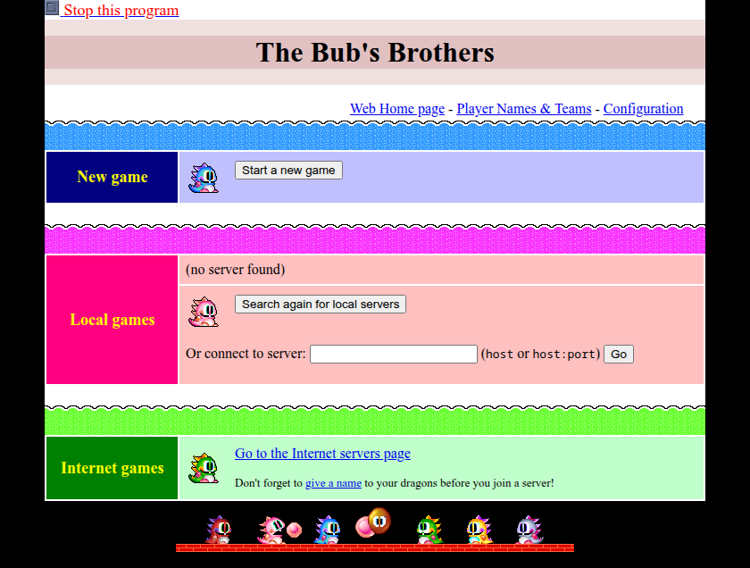
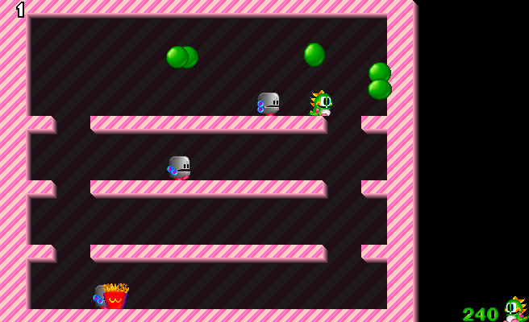

The Bub's Brothers, updated
The fast multiplayer bubble game for up to 10 players, on one computer or over a network, now running on today's systems: Python 3, a new one-file client, full screen, sound and music, and ready-made downloads for Windows, macOS and Linux.

What's new
A new client, one file
The Rust client (bubbros-client) is a single program for
Windows, macOS and Linux. It needs no Python and no game files: graphics,
sounds, music and levels come from the server and are kept in a cache,
so it can join any Bub's Brothers server, old or new.
Play alone, no setup
Start the portable client and, if no game runs on your computer, it starts one just for you. Pick a level set (Levels, Lost Levels, House of Fun, Arena and more) and choose unlimited lives, or 5 lives with an extra one every 50000 points.
Portable and bundled
The game server is also available as one program with its own Python inside, built in. The portable client carries that server, so playing needs nothing else installed. The python version still runs on your own Python, as before.
Full screen and resizable
Press F11 or Alt+Enter for full screen, Esc to leave it. Maximise or resize the window freely: the game is scaled to fill it, keeping its proportions. This works in the new client and in the Python clients (pygame, GTK and X).
Sound and music
Sound effects and background music in every client, louder and clearer than before. F7 / F8 change the volume in 20% steps, F9 mutes. On Linux it plays through PulseAudio (or PipeWire), so it appears in your sound settings.
Packages for Linux
Ready-made .deb packages for Ubuntu and Debian and
.rpm packages for Fedora and OpenMandriva, plus an Arch
Linux build recipe. They add "Bub-n-Bros play alone" and "Bub-n-Bros
server" to your applications menu.
Python 3
The whole game (server, web launcher, Python clients) is ported from Python 2 to Python 3 and tested with Python 3.14. The network protocol is unchanged, so new and old servers and clients still play together.
Still a party game
Up to 10 players: several on one keyboard, others on other computers on your network. The web launcher starts a game and lets everyone join, and clients find servers on the local network by themselves.
Screenshots





Which version do I need?
bubbros-portable
Easiest. One program, nothing else to install. Joins games on your network, or plays alone with its built-in server.
bubbros-server-portable
The game server as one program, with its own Python inside. For hosting games that other computers join. Players use the portable client (or any other client).
bubbros-python
The classic game for your own Python 3 (with pygame): server, web launcher, Python clients, and on Linux the Rust client too.
Good to know
- The rules, levels and graphics are the original ones. The only gameplay difference: the clock bonus is switched off in this version, because it relied on a Python 2 extension.
- The downloads are not signed. Windows may say "Windows protected your PC" (choose More info, then Run anyway); on macOS, open the program the first time with right-click, Open.
- Another project, alexmyczko/bubbros, also seems to be making a new version of The Bub's Brothers. It is separate from this one.
- Developer documentation (architecture, game engine, making your own levels) is in the docs folder.